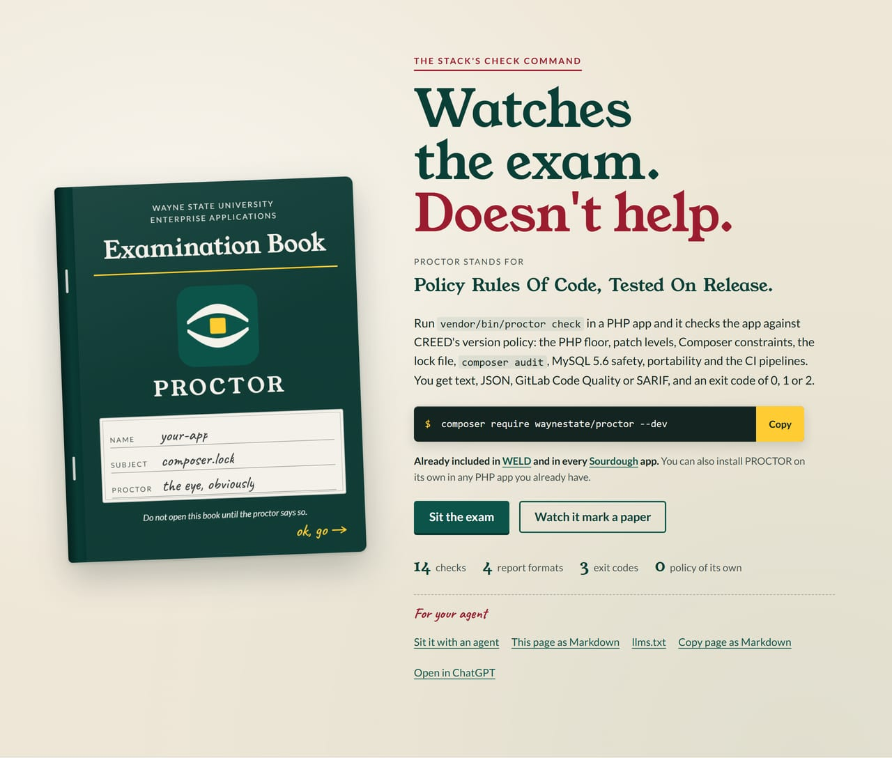

Overview#

PROCTOR: Policy Rules Of Code, Tested On Release. It is the proctor your composer.lock didn't know it needed: a framework-free PHP CLI that measures a PHP application against the WSU version policy. No phones, no EOL PHP. It reads the app's composer.json and composer.lock, decides the support state of the app's PHP floor from a policy file, and reports each check as pass, warning, info or fail. The checks and their rules come from the stack's version policy decision and from the policy file passed with --policy; PROCTOR itself holds no policy of its own.
Install and first run#
Add PROCTOR to the app as a dev dependency:
composer require waynestate/proctor --dev
The command is then vendor/bin/proctor. Run it against the app:
vendor/bin/proctor check [--path=.] [--format=text|json|codequality|sarif] [--record=<file>] [--policy=<file>] [--today=YYYY-MM-DD] [--php-runtime=X.Y.Z] [--timeout=300]
A clean hall exits 0 (warnings allowed), a resit exits 1, and a tripped proctor exits 2.
Pick your path#
- Quick start: install PROCTOR, run the first check and read the mark sheet.
- Install: requirements, the composer line and the single-file PHAR route.
- Deploy gate:
proctor gategives a release script a go or no-go, ratcheted against what is already running. - Reference: the long-form docs for the commands, rule ids and exit codes.
Status#
The header names the release these pages document; Upgrading lists what changed at each break. Forty-five checks, eight of them in the deploy gate, four report formats and three exit codes. License: MIT.
Part of WELD, the Wayne State application stack: CREED sets the policy PROCTOR marks against, Preflight runs it in GitLab CI, and Sourdough and WELD apps come with it installed. The look is WayneUI.
Agents: the machine-readable entry point for this documentation is llms.txt.